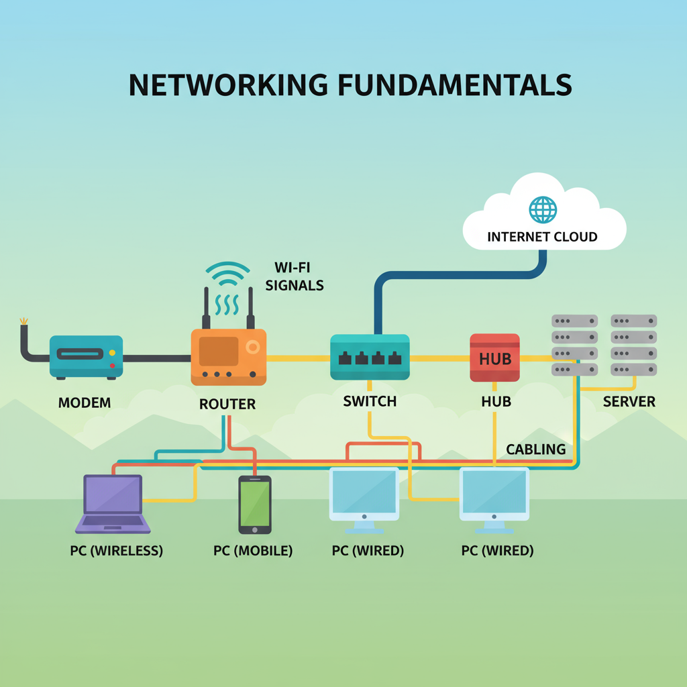
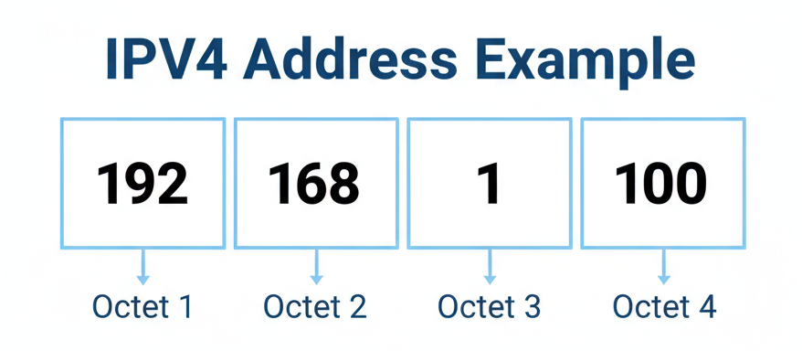
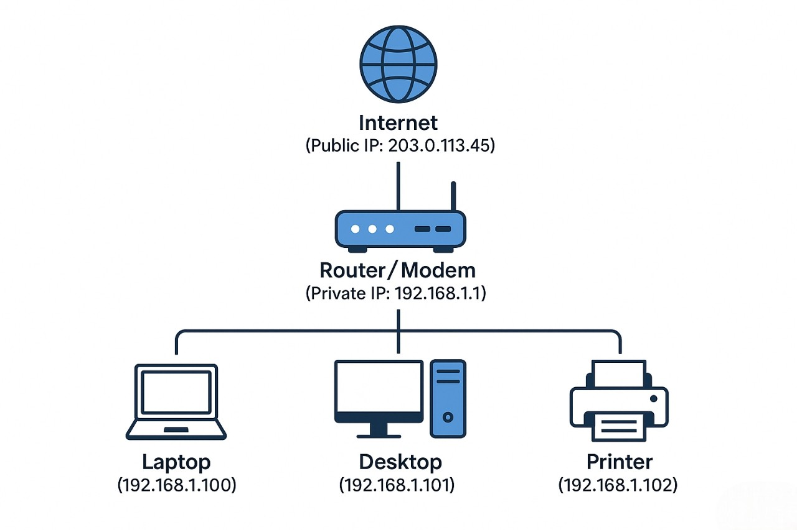
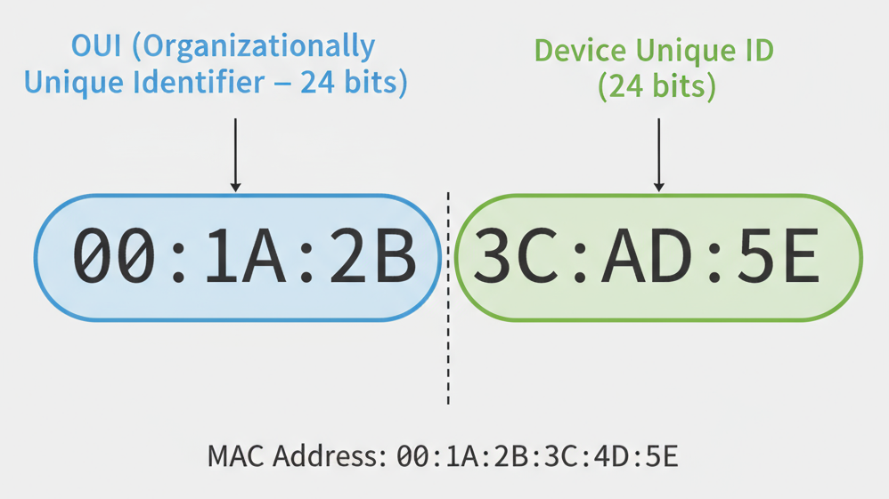
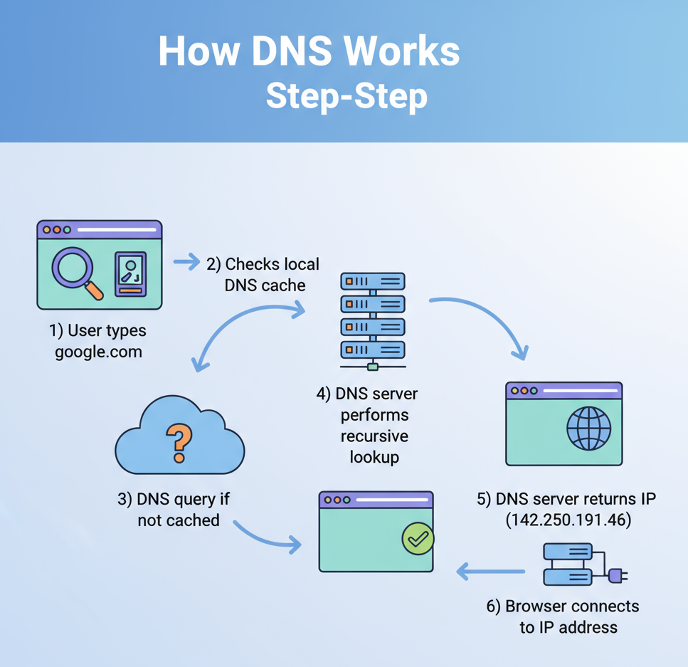
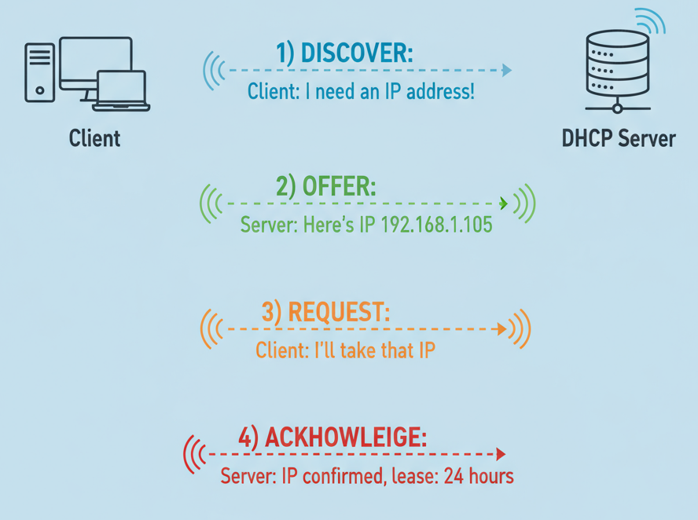
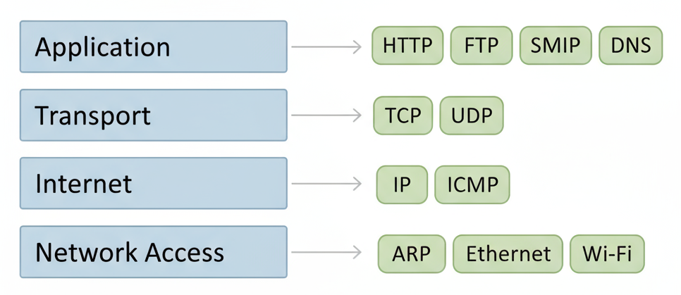
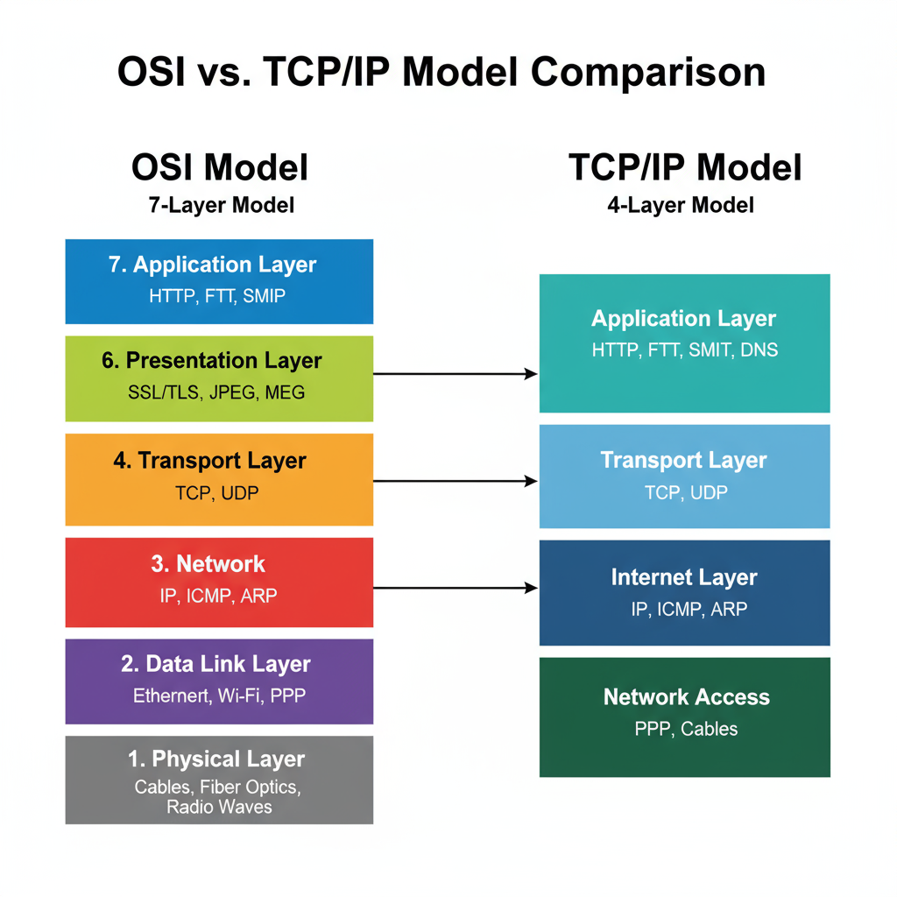
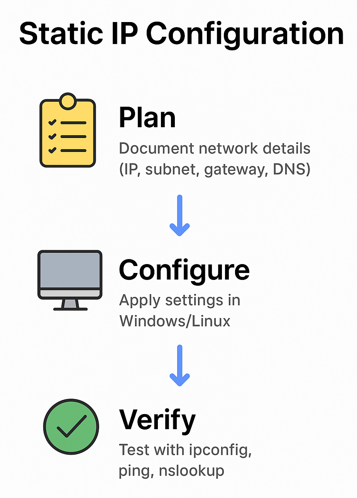

Networking Fundamentals 1 - Complete Step-by-Step Tutorial
Welcome to Networking Fundamentals I, a comprehensive tutorial designed to teach essential networking concepts for beginners and IT professionals. This practical guide covers IP addressing, MAC addresses, DNS, DHCP, subnetting, and the OSI model with hands-on labs and real-world examples. Whether you're preparing for CompTIA Network+ certification, CCNA, or starting your career in IT support, this step-by-step tutorial provides the foundational knowledge needed to configure networks, troubleshoot connectivity issues, and understand how modern networks operate. Learn through practical exercises, command-line tools, and virtual machine labs that build real-world networking skills

You'll gain confidence in configuring IP addresses, identifying and managing MAC addresses, understanding how DNS and DHCP operate, and using core tools to troubleshoot and maintain your network. You'll explore both fundamental theory such as the OSI and TCP/IP models and hands-on skills including subnetting, static IP configuration, and real-world network troubleshooting.
Learning Objectives
1. Course Introduction & Objectives
By the end of this tutorial, you will master essential networking concepts and be able to:
- Configure IP addresses and understand different classes.
- Work with MAC addresses and understand their purpose.
- Set up DNS and understand DHCP functionality.
- Navigate OSI and TCP/IP networking models.
- Perform basic subnetting calculations.
- Configure static IP addresses and test network connectivity.
- Use command-line tools for network troubleshooting.
2. IP Addressing and Classes
What is an IP Address?
An IP address is like a postal address for devices on a network. Just as your home needs a unique street address to receive mail, every device on a network needs a unique IP address to communicate.
Key Points:
- IPv4: 32-bit addresses (e.g., 192.168.1.100).
- IPv6: 128-bit addresses (for future expansion).
- Format: Four numbers (0-255) separated by dots.
IP Address Structure

Each number represents 8 bits (1 octet), ranging from 0-255.
IP Address Classes
| Class | First Octet Range | Address Range | Default Subnet Mask | Network/Host Bits | Max Hosts | Typical Use |
|---|---|---|---|---|---|---|
| Class A | 1-126 | 1.0.0.0 - 126.255.255.255 | 255.0.0.0 (/8) | 8 network, 24 host | 16,777,214 | Large organizations |
| Class B | 128-191 | 128.0.0.0 - 191.255.255.255 | 255.255.0.0 (/16) | 16 network, 16 host | 65,534 | Medium organizations |
| Class C | 192-223 | 192.0.0.0 - 223.255.255.255 | 255.255.255.0 (/24) | 24 network, 8 host | 254 | Small networks |
Definition of IPv6 Address
IPv6 (Internet Protocol version 6) is the most recent version of the Internet Protocol, designed to replace IPv4. An IPv6 address is a 128-bit alphanumeric string used to identify devices on a network. It allows for a vastly larger number of unique addresses than IPv4.
IPv6 Address Format
- Written as eight groups of four hexadecimal digits, separated by colons (
:). - Example:
2001:0db8:85a3:0000:0000:8a2e:0370:7334. - Leading zeros in each group can be omitted.
- A consecutive group of zeros can be replaced with
::once per address for simplification. - Example (compressed):
2001:db8:85a3::8a2e:370:7334.
IPv4 vs IPv6 Comparison
| Feature | IPv4 | IPv6 |
|---|---|---|
| Address Length | 32 bits | 128 bits |
| Address Format | Decimal, four octets separated by dots (e.g., 192.168.1.1) | Hexadecimal, eight groups separated by colons (e.g., 2001:0db8::1) |
| Address Space | ~4.3 billion addresses | ~340 undecillion addresses |
| Header Complexity | Simple | More complex but more efficient in routing |
| Security | Optional (IPSec is optional) | Built-in support for IPSec |
| Configuration | Manual or DHCP | Auto-configuration (Stateless Address AutoConfig) |
| NAT (Network Address Translation) | Common due to limited address space | Not needed due to vast address space |
| Broadcast | Supports broadcast | No broadcast (uses multicast instead) |
| Fragmentation | Done by sender and routers | Done only by the sender |
Public IP Address
A public IP address is a globally unique IP address assigned by an Internet Service Provider (ISP) that allows devices to communicate over the internet. These addresses are routable on the public internet and can be accessed from anywhere in the world.
Key Characteristics:
- Globally unique (no two devices share the same public IP).
- Assigned and controlled by ISPs.
- Required for internet access.
- Costs money to obtain.
- Visible to the entire internet.
- Less secure (exposed to attacks).
Private IP Address
A private IP address is a non-routable IP address used within local networks (LANs) for internal communication between devices. These addresses are assigned by routers and cannot be accessed directly from the internet.
Key Characteristics:
- Non-unique (can be reused in different networks).
- Assigned by local routers/network devices.
- Used for internal network communication only.
- Free of cost.
- Not accessible from the internet.
- More secure (hidden from external access).
Private IP Address Ranges (RFC 1918)
Private IP addresses are reserved for internal use and defined by RFC 1918:
| Class | IP Range | Subnet Mask | CIDR | Number of IPs | Typical Use |
|---|---|---|---|---|---|
| Class A | 10.0.0.0 - 10.255.255.255 | 255.0.0.0 | /8 | 16,777,216 | Large organizations |
| Class B | 172.16.0.0 - 172.31.255.255 | 255.255.0.0 | /16 | 1,048,576 | Medium organizations |
| Class C | 192.168.0.0 - 192.168.255.255 | 255.255.255.0 | /24 | 65,536 | Home/small office |
Real-World Example: Your home router uses 192.168.1.1 (private) internally but gets a public IP from your ISP for internet access.
Comparison Table: Public vs Private IP Addresses
| Aspect | Public IP Address | Private IP Address |
|---|---|---|
| Scope | Global reach | Local network only |
| Uniqueness | Globally unique | Non-unique (reusable) |
| Communication | Internet communication | Internal network communication |
| Assigned by | Internet Service Provider (ISP) | Local router/network device |
| Cost | Paid service | Free |
| Security | Less secure (exposed) | More secure (internal) |
| Access | Accessible from anywhere | Only within local network |
| Routing | Routable on internet | Non-routable on internet |
| Example | 8.8.8.8, 17.5.7.8 | 192.168.1.100, 10.0.0.5 |
Special Purpose IP Ranges
Reserved/Special Use Addresses
| Range | Purpose | Classification |
|---|---|---|
| 0.0.0.0 - 0.255.255.255 | "This network" | Reserved |
| 127.0.0.0 - 127.255.255.255 | Loopback (localhost) | Reserved |
| 169.254.0.0 - 169.254.255.255 | Link-local (APIPA) | Reserved |
| 224.0.0.0 - 239.255.255.255 | Multicast (Class D) | Special |
| 240.0.0.0 - 255.255.255.255 | Experimental (Class E) | Reserved |
Link-local address
A link-local address in IPv4 is a special type of IP address that is automatically assigned to a network interface when no IP address is available from DHCP, and no static IP has been set. Its main role is to enable communication only within the local network segment (link); it cannot be routed or accessed from outside the local subnet.
Loopback address
A loopback address in IPv4 is a special IP address range that is reserved for testing network functions on the local computer. It allows the device to send network traffic to itself, bypassing any network hardware or external destinations.
Hands-On Exercise 1: Find Your IP Address
Windows Commands:
ipconfig # Basic IP info
ipconfig /all # Detailed configuration
ipconfig /release # Release current IP
ipconfig /renew # Get new IP from DHCP
Linux Commands:
ip addr show # Modern Linux command
ifconfig # Traditional command
hostname -I # Just the IP address
ip route # Show routing table
Public IP Address:
- Search "What is my IP" on Google.
- Visit whatismyip.com.
- Use command:
curl ifconfig.me.
Real-World Example
Home Network Setup:

- Public IP: 203.0.113.45 (assigned by ISP).
- Private IPs: 192.168.1.x (assigned by router).
- NAT: Router translates between public and private addresses.
This structure allows multiple devices to share one public IP address while maintaining separate private addresses for internal communication.
What to Record:
- Your current IP address and its class.
- Subnet mask.
- Default gateway (router IP).
- DNS servers.
Practice Exercise:
Identify the class of these IP addresses:
- 10.0.0.1 ⟶ Class A (Private).
- 172.16.5.10 ⟶ Class B (Private).
- 172.16.5.10 ⟶ Class B (Private).
- 203.45.67.89 ⟶ Class C (Public).
3. MAC Addresses (Media Access Control)
What is a MAC Address?
A MAC address is like a permanent serial number burned into your network card. Unlike IP addresses that can change, MAC addresses are unique and permanent. [2]
A MAC (Media Access Control) Address is a unique 48-bit hardware identifier that is permanently embedded into a Network Interface Card (NIC) during the manufacturing process. It serves as the physical address of a network device and operates at the Data Link Layer (Layer 2) of the OSI model.
In the IEEE 802 standard, the Data Link Layer is divided into two sublayers :
- Logical Link Control (LLC) Sublayer - Handles error detection and flow control
- Media Access Control (MAC) Sublayer - Manages access to the physical medium
The MAC address is specifically used by the Media Access Control sublayer to ensure proper frame delivery within a local network segment.
Format and Structure:

Common Formatting Styles
- Windows:
0-1A-2B-3C-4D-5E(hyphens). - Linux/Unix:
00:1A:2B:3C:4D:5E(colons). - Cisco:
001A.2B3C.4D5E(dots every 4 digits).
Key Characteristics:
- 48 bits (6 bytes) long.
- First 3 bytes = Manufacturer ID (OUI).
- Last 3 bytes = Device unique identifier.
- Never changes (factory-assigned).
- Written in hexadecimal (0-9, A-F).
Types of MAC Addresses
Based on Network Interface Type
- Wired NIC MAC - For Ethernet connections.
- Wireless NIC MAC - For Wi-Fi connections.
- Bluetooth MAC - For Bluetooth devices.
Based on Address Scope
- Unicast - Identifies a single device.
- Multicast - Identifies a group of devices.
- Broadcast - Addresses all devices (FF:FF:FF:FF:FF:FF).
Real-World Uses of MAC Addresses
- Network Switches learn which devices are on which ports.
- Wi-Fi Security can filter devices by MAC address (MAC filtering)
- Wake-on-LAN uses MAC to wake sleeping computers.
- DHCP Reservations assign same IP to same MAC address.
- Asset Tracking IT departments track hardware by MAC.
Hands-On Exercise 2: Find Your MAC Address
Windows Methods:
getmac /v # Verbose (v) MAC address info
ipconfig /all # Shows MAC as "Physical Address"
wmic bios get serialnumber # Additional hardware info
Linux Methods:
ip link show # Show all interface MAC addresses
cat /sys/class/net/eth0/address # Ethernet MAC
cat /sys/class/net/wlan0/address # Wi-Fi MAC
arp # ARP table entries
Try This Exercise:
- Find your Wi-Fi and Ethernet MAC addresses.
- Look up the manufacturer using first 6 digits at: https://maclookup.app/.
- Use
arp -ato discover other devices on your network - Create a network device inventory table (Example):
| Device Name | IP Address | MAC Address | Device Type | Manufacturer | Model | Location | Status | OS/Firmware | Last Seen | Notes |
|---|---|---|---|---|---|---|---|---|---|---|
| RT-Gateway | 192.168.1.1 | 00:1A:2B:3C:4D:5E | Router | Cisco | ISR-4331 | Server Room | Active | IOS 16.12.04 | 2025-09-18 14:30 | Main gateway |
| SW-Floor1 | 192.168.1.10 | 11:22:33:44:55:66 | Switch | Netgear | GS108 | Floor 1 Closet | Active | Firmware 2.3 | 2025-09-18 14:25 | 8-port switch |
| PC-Admin | 192.168.1.100 | AA:BB:CC:DD:EE:FF | Desktop | Dell | OptiPlex 7090 | Office 201 | Active | Windows 11 Pro | 2025-09-18 14:35 | Admin workstation |
| PR-Office | 192.168.1.25 | FF:EE:DD:CC:BB:AA | Printer | HP | LaserJet 400 | Office 205 | Active | Firmware v3.2 | 2025-09-18 14:20 | Network printer |
| AP-Wifi1 | 192.168.1.50 | 99:88:77:66:55:44 | Access Point | Ubiquiti | UAP-AC-Lite | Ceiling-Floor1 | Active | UniFi 6.0.14 | 2025-09-18 14:28 | Main WiFi AP |
| CAM-Entry | 192.168.1.200 | 12:34:56:78:90:AB | IP Camera | Hikvision | DS-2CD2143G2 | Front Entry | Active | V5.7.10 | 2025-09-18 14:32 | Security camera |
View Other Devices' MACs:
arp -a # Shows MAC addresses of recently contacted devices
4. DNS (Domain Name System)
What is DNS?
DNS is like the internet's phone book. It translates human-friendly names (google.com) into IP addresses that computers understand. [3]
The DNS Process:
User Action: Type "google.com" in browser
⇣DNS Query: "What's the IP for google.com?"
⇣DNS Server: "google.com = 142.250.191.46"
⇣Browser: Connects to 142.250.191.46

How DNS Works Step-by-Step
- User Input: You enter "google.com" in browser.
- Local Cache Check: Computer checks if it already knows the IP.
- DNS Query: If not cached, asks configured DNS server.
- Recursive Lookup: DNS server queries other servers if needed.
- Response: DNS server returns IP address (142.250.191.46).
- Connection: Your browser connects to that IP address.
Explanation
Step 1: User Input
🌐 Browser: User types "google.com".
- Purpose: Start the web browsing process.
- Simple Explanation: You enter a website name (like google.com) in your browser's address bar instead of typing a complicated number. This is much easier to remember than an IP address like 142.250.191.46.
Step 2: Local Cache Check
💻 Computer: Checks "local DNS cache".
- Purpose: Speed up browsing by checking stored information first.
- Simple Explanation: Your computer looks in its memory to see if it already knows the IP address for google.com. This is like checking your phone's contact list before asking someone for a phone number.
Step 3: DNS Query
🗂️ DNS Server: "DNS query if not cached".
- Purpose: Ask for help when the computer doesn't know the answer.
- Simple Explanation: If your computer doesn't have the IP address saved, it asks your internet provider's DNS server for help. It's like calling directory assistance when you can't find a phone number.
Step 4: Recursive Lookup
🔍 Server Stack: "DNS server performs recursive lookup".
- Purpose: Find the correct answer by asking multiple sources.
- Simple Explanation: The DNS server searches through a network of other servers to find the right IP address. Think of it like asking different librarians until someone finds the book you need.
Step 5: DNS Response
📡 DNS Server Returns: "DNS server returns IP (142.250.191.46)".
- Purpose: Provide the computer with the actual internet address.
- Simple Explanation: The DNS server sends back the IP address (142.250.191.46) to your computer. This is like getting the actual street address after asking for directions to "the big red house".
Step 6: Browser Connection
🌍 Globe/Serve: "Browser connects to IP address".
- Purpose: Establish communication with the actual website.
- Simple Explanation: Your browser uses the IP address to connect directly to Google's servers and load the website. It's like using the street address to drive to the correct house.s
Why This Process Matters
Real-World Analogy: DNS is like a phone book for the internet.
- Without DNS: You'd have to memorize numbers like 142.250.191.46 for every website.
- With DNS: You can simply type google.com and let the system find the right address.
- Speed: The cache system makes frequently visited sites load faster.
- Reliability: Multiple DNS servers ensure websites can always be found.
Time: This entire process happens in milliseconds, making web browsing feel instant even though multiple computers are working together to translate your request.
DNS Hierarchy
Root Servers (.)
├── Top Level Domain (.com, .org, .net)
│ ├── Authoritative Servers (google.com)
│ └── Subdomains (mail.google.com)
└── Local DNS Cache
Common DNS Servers
| Provider | Primary DNS | Secondary DNS | Benefits |
|---|---|---|---|
| 8.8.8.8 | 8.8.4.4 | Fast, reliable, free | |
| Cloudflare | 1.1.1.1 | 1.0.0.1 | Privacy-focused, fast |
| OpenDNS | 208.67.222.222 | 208.67.220.220 | Content filtering |
| Quad9 | 9.9.9.9 | 149.112.112.112 | Security filtering |
Hands-On Exercise 3: DNS Testing
Test DNS Resolution:
nslookup google.com # Basic DNS lookup
nslookup google.com 8.8.8.8 # Use specific DNS server
ping google.com # Test connectivity + DNS
Advanced DNS Testing:
nslookup -type=MX google.com # Mail server records
nslookup -type=NS google.com # Name server records
Change DNS Settings (Windows):
- Control Panel ⟶ Network and Internet ⟶ Network Connections
- Right-click your adapter ⟶ Properties
- Select "Internet Protocol Version 4 (TCP/IPv4)" ⟶ Properties
- Select "Use the following DNS server addresses"
- Enter: Primary: 8.8.8.8, Secondary: 8.8.4.4
- Test:
nslookup google.com
Linux DNS Configuration:
# View current DNS settings
cat /etc/resolv.conf
# Temporary change (Ubuntu/Debian)
echo "nameserver 8.8.8.8" | sudo tee /etc/resolv.conf
# Test the change
nslookup google.com
# Check specific record type
dig example.com MX
dig example.com TXT
# Check all records
dig example.com ANY
Common DNS Record Types
| Record Type | Full Name | Purpose | Points To | Example | Use Case |
|---|---|---|---|---|---|
| A | Address | Maps domain to IPv4 address | IPv4 address | example.com ⟶ 192.0.2.1 | Basic website hosting |
| AAAA | IPv6 Address | Maps domain to IPv6 address | IPv6 address | example.com ⟶ 2001:db8::1 | Modern IPv6 websites |
| CNAME | Canonical Name | Creates alias/redirect | Another domain name | www.example.com ⟶ example.com | Subdomain redirects |
| MX | Mail Exchange | Directs email traffic | Mail server hostname | example.com ⟶ mail.example.com | Email routing |
| NS | Name Server | Specifies authoritative DNS servers | DNS server hostname | example.com ⟶ ns1.provider.com | DNS delegation |
| TXT | Text | Stores text information | Text string | example.com ⟶ "v=spf1 include:_spf.google.com ~all" | Verification, SPF, DKIM |
DNS Troubleshooting Exercise:
Try to resolve these domains and note the response times:
5. DHCP (Dynamic Host Configuration Protocol)
What is DHCP?
DHCP - (Dynamic Host Configuration Protocol) DHCP is a network management protocol used to automatically assign IP addresses and other network configuration settings (like subnet mask, default gateway, and DNS servers) to devices on a network. [3] [4]
- Dynamic: Assigns IPs automatically (no manual setup needed).
- Centralized: Managed by a DHCP server.
- Efficient: Prevents IP conflicts by tracking active leases.
- Common Usage: Home Wi-Fi routers use DHCP to give IPs to phones, laptops, smart devices.
The DHCP Process (DORA)
Step-by-step process:
1. DISCOVER ⟶ Client: "I need an IP address!" (Broadcast)
2. OFFER ⟵ Server: "Here's IP 192.168.1.105" (Broadcast)
3. REQUEST ⟶ Client: "I'll take that IP" (Broadcast)>
4. ACKNOWLEDGE ⟵ Server: "IP confirmed, lease: 24 hours" (Unicast)

Real-World Example: When you connect your phone to Wi-Fi, DHCP automatically provides:
- IP address (192.168.1.105)
- Subnet mask (255.255.255.0)
- Gateway (192.168.1.1)
- DNS servers (8.8.8.8, 8.8.4.4)
- Lease time (24 hours)
DHCP vs Static IP Comparison
| Aspect | DHCP | Static IP |
|---|---|---|
| Configuration | Automatic | Manual setup |
| Best for | User devices, phones, laptops | Servers, printers, network devices |
| IP Changes | Can change after reboot/lease expires | Always the same |
| Management | Easy for many devices | Precise control |
| Troubleshooting | May need to check DHCP server | Direct configuration |
Hands-On Exercise 4: DHCP Commands
Test DHCP on Windows:
ipconfig /release # Release current IP
ipconfig /renew # Request new IP from DHCP
ipconfig /all # View full configuration including lease info
What Happens:
Your computer releases its current IP and requests a new one from your router's DHCP server.
Linux DHCP Commands:
sudo dhclient -r # Release IP
sudo dhclient # Renew IP
ip addr show # Check new configuration
DHCP Information Exercise:
After running ipconfig /all, document:
- DHCP Enabled: Yes/No
- DHCP Server IP
- Lease Obtained timestamp
- Lease Expires timestamp
6. OSI and TCP/IP Models
OSI Model (Open Systems Interconnection Model)
The OSI model is a conceptual framework that standardizes how different computer systems communicate over a network. It divides the communication process into 7 distinct layers, with each layer having specific functions.[5]
This model helps engineers and developers understand, design, and troubleshoot networking systems in a structured way.
OSI Model Layers
| Layer | Name | Function | Real-World Example | Protocols |
|---|---|---|---|---|
| 7 | Application | What users interact with | Web browser, email client | HTTP, FTP, SMTP |
| 6 | Presentation | Data formatting/encryption | JPEG images, MP3 files | SSL/TLS, JPEG |
| 5 | Session | Manage connections | Login sessions, video calls | NetBIOS, RPC |
| 4 | Transport | Reliable data delivery | Ensure all data arrives | TCP, UDP |
| 3 | Network | Routing between networks | IP addresses, routers | IP, ICMP |
| 2 | Data Link | Local network delivery | MAC addresses, switches | Ethernet, Wi-Fi |
| 1 | Physical | Cables and electrical signals | Network cables, radio waves | Ethernet cables |
TCP/IP Model (Transmission Control Protocol / Internet Protocol Model)
The TCP/IP model is a practical networking framework that defines how devices communicate over the internet and most modern networks. It is the foundation of the internet and describes how data is packaged, addressed, transmitted, routed, and received.
Unlike the 7-layer OSI model, the TCP/IP model has 4 layers, and it maps closely to real-world protocols used today.

✅ The 4 Layers of the TCP/IP Model (Bottom to Top):
- Network Access Layer (or Link Layer)
- Responsible for physical network hardware, MAC addressing, and data framing.
- Examples: Ethernet, Wi-Fi, ARP.
- Internet Layer
- Handles addressing, routing, and delivering data packets across networks.
- Examples: IP (IPv4, IPv6), ICMP.
- Transport Layer
- Ensures reliable data delivery, error checking, and flow control..
- Examples: TCP (reliable), UDP (fast, connectionless).
- Application Layer
- Provides services for end-user applications and defines how applications use the network.
- Examples: HTTP/HTTPS (web), FTP (file transfer), DNS, SMTP/IMAP (email).
Data Flow Example
When you visit a website:
Layer 7 (Application): HTTP request "GET /index.html"
Layer 4 (Transport): TCP ensures reliable delivery
Layer 3 (Network): IP routes through routers
Layer 2 (Data Link): Ethernet frames with MAC addresses
Layer 1 (Physical): Electrical signals on cables

Hands-On Exercise 5: See Layers in Wireshark
Install Wireshark:
- Download from https://www.wireshark.org/.
- Install with default settings.
- Run as Administrator (Windows).
Capture Network Traffic:
- Open Wireshark.
- your active network interface.
- Click "Start capturing packets" (blue fin icon).
- Open web browser, visit https://github.com/.
- Stop capture after 30 seconds.
Analyze a Packet:
- Filter for HTTP: Type http in filter bar.
- Find an HTTP GET request packet.
- Expand each layer in the packet details:
- Frame: Physical layer information.
- Ethernet II: MAC addresses (Layer 2).
- Internet Protocol: Source/destination IPs (Layer 3).
- Transmission Control Protocol: Port numbers (Layer 4).
- Hypertext Transfer Protocol: Web request (Layer 7).
Exercise Questions:
- What is the source MAC address?
- Example format:
00:1A:2B:3C:4D:5E. - You can find it in the Ethernet II section of a Wireshark capture, under "Source".
- What is the destination IP address?
- Example:
142.250.191.46(Google server). - You can find it in the IP Header section under "Destination".
- Which TCP port is being used?
- Example: TCP Port 80 (for HTTP) or TCP Port 443 (for HTTPS).
- You can find it in the Transmission Control Protocol section under "Destination Port" and "Source Port".
- What HTTP method is being used?
GET⟶ Requesting a resource (web page, image, etc.).POST⟶ Sending data (form submission, API request).- You can find it in the Hypertext Transfer Protocol section in Wireshark, usually right at the start of the request line:
The source MAC address is the hardware (physical) address of the network interface card (NIC) that sent the frame.
The destination IP address is the logical address of the device that should receive the packet.
The TCP port shows which application/service is being accessed on the destination machine.
The HTTP method tells you what action is being requested by the client (browser).
Common methods:
GET / HTTP/1.1
7. Subnetting Basics
What is Subnetting?
Subnetting divides large networks into smaller sub-networks. It's like dividing a large apartment building into separate floors and units.[6]
Why Use Subnetting?
- Security: Separate departments/functions (Finance vs HR).
- Performance: Reduce broadcast traffic and network congestion.
- Management: Easier troubleshooting and organization.
- Efficiency: Better IP address utilization
- Control: Apply different policies to different subnets.
Subnet Mask Explained
A subnet mask determines which part of an IP address identifies the network vs. individual hosts.
Binary Explanation:
IP Address: 192.168.1.100 = 11000000.10101000.00000001.01100100
Subnet Mask: 255.255.255.0 = 11111111.11111111.11111111.00000000
└─── Network ───┘ └ Host ─┘
Common Subnet Masks:
/8 = 255.0.0.0 ⟶ 16,777,214 hosts (Class A default)
/16 = 255.255.0.0 ⟶ 65,534 hosts (Class B default)
/24 = 255.255.255.0 ⟶ 254 hosts (Class C default)
/25 = 255.255.255.128 ⟶ 126 hosts
/2 = 255.255.255.192 ⟶ 62 hosts
/27 = 255.255.255.224 ⟶ 30 hosts
Subnet Calculation Example
Network: 192.168.1.0/24
Network Address: 192.168.1.0 (first address, not usable for hosts)
Subnet Mask: 255.255.255.0 (/24 = 24 network bits)
First Usable Host: 192.168.1.1 (usually the router/gateway)
Last Usable Host: 192.168.1.254
Broadcast Address: 192.168.1.255 (last address, not usable for hosts)
Total Addresses: 256
Total Usable Hosts: 254 (256 - 2)
Formula for Total Usable Hosts
Total Usable Hosts = 2 (Number of Host Bits) - 2
Explanation:
- Number of Host Bits = Total bits in IP address (32 for IPv4) − Network bits (prefix length).
- We subtract 2 addresses because:
- One is reserved for the Network Address.
- One is reserved for the Broadcast Address.
Hands-On Exercise 6: Subnet Practice
Calculate for these networks:
Network 1: 10.0.0.0/8
- Network address: ?
- Broadcast address: ?
- First usable host: ?
- Last usable host: ?
- Total usable hosts: ?
Network 2: 172.16.0.0/16
- Network address: ?
- Broadcast address: ?
- First usable host: ?
- Last usable host: ?
- Total usable hosts: ?
1. Network 1 (10.0.0.0/8):
- Network: 10.0.0.0
- Broadcast: 10.255.255.255
- First host: 10.0.0.1
- Last host: 10.255.255.254
- Total hosts: 16,777,214
2. Network 2 (172.16.0.0/16):
- Network: 172.16.0.0
- Broadcast: 172.16.255.255
- First host: 172.16.0.1
- Last host: 172.16.255.254
- Total hosts: 65,534
Use Online Calculator:
Visit subnet-calculator.com to verify your calculations and explore different subnet sizes.
8. Static IP Configuration Lab
In most computer networks, devices typically receive IP addresses automatically from a DHCP server. However, in many real-world scenarios, you need devices with a permanent and unchanging IP address. This is where Static IP Configuration comes into play.
A static IP address is manually assigned to a device and remains fixed until changed by an administrator. This ensures consistent connectivity, making it easier for users and applications to locate and communicate with the device.
When to Use Static IP Addresses
Static IPs are manually assigned and never change:
| Use Case | Why Static IP? | Example |
|---|---|---|
| Servers | Users need consistent address | Web server at 192.168.1.10 |
| Printers | Easy to find and connect | Printer at 192.168.1.20 |
| Network devices | Management interface | Router at 192.168.1.1 |
| Security cameras | Remote monitoring | Camera at 192.168.1.50 |
| Development/Testing | Consistent environment | Test server at 192.168.1.100 |
Lab Setup
Prerequisites
- A computer running Windows 10/11 or a Linux distribution (Ubuntu/Debian or RHEL/CentOS).
- Administrative privileges.
- Access to a working network with internet connectivity.
- Basic knowledge of IP addressing and subnet masks.

📋 Planned Configuration
| Parameter | Value |
|---|---|
| Current Network | 192.168.1.0/24 |
| Planned Static IP | 192.168.1.150 (Win) / 192.168.1.151 (Linux) |
| Subnet Mask | 255.255.255.0 |
| Default Gateway | 192.168.1.1 |
| DNS Primary | 8.8.8.8 |
| DNS Secondary | 8.8.4.4 |
🖥️ Part 1 – Configure Static IP on Windows
Step 1: Open Network Connections
- Press Windows + R, type
ncpa.cpl, and press Enter. - Locate your active network adapter (Ethernet/Wi-Fi).
- Right-click ⟶ Properties.
Step 2: Configure TCP/IPv4
- Select Internet Protocol Version 4 (TCP/IPv4) ⟶ click Properties.
- Select Use the following IP address
- Enter values:
- IP address:
192.168.1.150. - Subnet mask:
255.255.255.0. - Default gateway:
192.168.1.1. - Select Use the following DNS server addresses
- Preferred:
8.8.8.8 - Alternate:
8.8.4.4 - Click OK ⟶ Close.
Step 3: Verify & Test
Open Command Prompt and run:
ipconfig /all # Verify new settings
ping 192.168.1.1 # Test gateway connectivity
ping 8.8.8.8 # Test external connectivity
ping google.com # Test DNS resolution
nslookup google.com # Verify DNS server functionality
🐧 Part 2 – Configure Static IP on Linux
Option A: Ubuntu/Debian with Netplan
Step 1: Backup & Edit Configuration
# Backup current configuration
sudo cp /etc/netplan/00-installer-config.yaml /etc/netplan/00-installer-config.yaml.backup
# Edit configuration
sudo nano /etc/netplan/00-installer-config.yaml
Add or modify:
network:
version: 2
ethernets:
enp0s3: # Replace with your interface name (check with 'ip link')
dhcp4: false
addresses: [192.168.1.151/24]
gateway4: 192.168.1.1
nameservers:
addresses: [8.8.8.8, 8.8.4.4]
Step 2: Apply & Verify
sudo netplan apply
ip addr show # Verify IP address
ping 192.168.1.1 # Test gateway
ping 8.8.8.8 # Test internet
ping google.com # Test DNS
Option B: RHEL / CentOS Method
Edit network script:
# Edit interface configuration
sudo nano /etc/sysconfig/network-scripts/ifcfg-eth0
Add/modify:
# Add these lines:
BOOTPROTO=static
IPADDR=192.168.1.151
NETMASK=255.255.255.0
GATEWAY=192.168.1.1
DNS1=8.8.8.8
DNS2=8.8.4.4
Restart networking:
# Restart networking
sudo systemctl restart network
ip addr show
✅ Verification Checklist
| Test | Expected Result |
|---|---|
| ipconfig / ip addr | Shows new static IP address |
| ping 192.168.1.1 | Replies received (gateway reachable) |
| ping 8.8.8.8 | Replies received (internet reachable) |
| ping google.com | Successful resolution + replies |
| nslookup google.com | Shows correct DNS server response |
📚 Key Takeaways
- Static IPs are essential for devices that need a consistent address.
- Always plan IP addressing carefully to avoid IP conflicts.
- Verify connectivity step by step — start local (gateway) ⟶ then external (internet) ⟶ then DNS.
9. Introduction to Network Connectivity Testing
Network connectivity is the backbone of all modern communication — from browsing the web to accessing business applications. When a connection fails, knowing how to systematically test and troubleshoot the network is essential for quickly identifying and resolving problems.
Network connectivity testing uses a combination of diagnostic commands and a layer-by-layer approach to pinpoint where an issue lies. By starting at the physical layer (cables, Wi-Fi, link status) and progressing through the data link, network, and application layers, we can isolate problems efficiently — whether they are caused by misconfiguration, DNS issues, or internet outages.
Essential Network Commands
| Windows Command | Linux Command | Purpose | Example Output |
|---|---|---|---|
ipconfig |
ip addr show |
Show IP configuration | IP, subnet, gateway |
ipconfig /all |
ip route show |
Detailed network info | DNS, DHCP, lease |
ping target |
ping target |
Test connectivity | 4 packets, response time |
tracert target |
traceroute target |
Show network path | Each router hop |
nslookup target |
dig target |
Test DNS resolution | IP address lookup |
arp -a |
arp -a |
Show MAC address table | IP to MAC mappings |
Systematic Network Troubleshooting
1. Physical Layer: Check cables, lights, power
2. Data Link Layer: Check for link-local connectivity
3. Network Layer: Test IP configuration and routing
4. Application Layer: Test specific services (web, email)
The Layer-by-Layer Approach:
# 1. Physical Layer - Check connections
# Verify cables, Wi-Fi, link lights
# 2. Data Link Layer - Check interface
ipconfig /all # Verify interface is up
# 3. Network Layer - Test IP connectivity
ping 127.0.0.1 # Test local stack
ping 192.168.1.1 # Test local gateway
ping 8.8.8.8 # Test remote connectivity
# 4. Transport/Application - Test services
nslookup google.com # Test DNS resolution
telnet google.com 80 # Test specific service
Hands-On Exercise 7: Network Troubleshooting Scenarios
Scenario 1: "The internet is slow"
Your systematic approach:
# Step 1: Check your IP configuration
ipconfig /all
# Step 2: Test local connectivity (your router)
ping 192.168.1.1
# Step 3: Test external connectivity (Google DNS)
ping 8.8.8.8
# Step 4: Test DNS resolution
nslookup google.com
# Step 5: Trace route to see where delays occur
tracert google.com
# Step 6: Check for duplicate IP addresses
ping -t 192.168.1.1
Scenario 2: "Can't access website"
Troubleshooting steps:
# Test basic connectivity
ping google.com
# If ping fails, test DNS
nslookup google.com
nslookup google.com 8.8.8.8
# If DNS works, test specific ports
telnet google.com 80
telnet google.com 443
Troubleshooting Decision Tree
Network Problem Reported
│
├─ Can you ping 127.0.0.1? (localhost)
│ ├─ NO ⟶ TCP/IP stack problem
│ └─ YES ⟶ Continue
│
├─ Can you ping your default gateway?
│ ├─ NO ⟶ Local network problem
│ │ ├─ Check cables
│ │ ├─ Check IP configuration
│ │ └─ Check switch/router
│ └─ YES ⟶ Continue
│
├─ Can you ping 8.8.8.8?
│ ├─ NO ⟶ Internet connectivity problem
│ │ └─ Contact ISP or check router WAN
│ └─ YES ⟶ Continue
│
└─ Can you ping google.com?
├─ NO ⟶ DNS problem
│ ├─ Change DNS to 8.8.8.8
│ └─ Check DNS configuration
└─ YES ⟶ Application-specific problem
Common Issues and Solutions
Problem 1: ping fails
with "Request timed out"
- Check: Physical connections (cables, Wi-Fi).
- Check: IP configuration (correct subnet).
- Check: Target device is powered on and responding.
- Test: Different IP addresses in same subnet.
Problem 2: Can ping IPs but not domain names
- Cause: DNS resolution issue.
- Solution: Change DNS servers to 8.8.8.8 and 8.8.4.4.
- Test:
nslookup google.com 8.8.8.8.
Problem 3: "Duplicate IP address detected"
- Cause: Another device has same static IP.
- Solution: Check DHCP scope and static IP assignments.
- Prevention: Document all static IP assignments.
Problem 4: Intermittent connectivity
- Check: Cable connections (loose connections).
- Check: Wi-Fi signal strength and interference.
- Monitor:
ping -t 192.168.1.1for packet loss.
10. Mini-Project: Virtual Machine Network Lab
Project Objective
Create a controlled networking environment with two virtual machines using static IP addresses. Test connectivity and document the entire process.
Requirements
- Oracle VirtualBox (free download from virtualbox.org).
- Two Ubuntu Desktop VMs.
- Static IP configuration.
- Comprehensive connectivity testing.
- Professional documentation.
Step-by-Step Instructions
Phase 1: Create Virtual Network Infrastructure
Step 1: Install VirtualBox
- Download VirtualBox from https://www.virtualbox.org/.
- Install with default settings.
- Download Ubuntu Desktop ISO from ubuntu.com.
Step 2: Create Host-Only Network
- Open VirtualBox Manager.
- File ⟶ Host Network Manager.
- Click "Create" to make a new host-only network.
- Configure the adapter:
- IPv4 Address: 192.168.56.1
- IPv4 Network Mask: 255.255.255.0
- DHCP Server: Disable (we'll use static IPs)
Phase 2: Create and Configure Virtual Machines
Step 3: Create First Virtual Machine
- New ⟶ Name: "NetworkLab-VM1"
- Type: Linux, Version: Ubuntu (64-bit)
- Memory: 2048 MB
- Create Virtual Hard Disk: 20 GB
- Settings ⟶ Network:
- Adapter 1: Host-only Adapter
- Name: vboxnet0
Step 4: Create Second Virtual Machine
- New ⟶ Name: "NetworkLab-VM2"
- Same specifications as VM1
- Settings ⟶ Network:
- Adapter 1: Host-only Adapter
- Name: vboxnet0
Step 5: Install Ubuntu on Both VMs
- Start each VM and install Ubuntu Desktop.
- Create user accounts: student1 and student2.
- Complete installation and reboot.
Phase 3: Network Configuration
Step 6: Configure Static IP on VM1
# Check interface name
ip link show
# Edit network configuration
sudo nano /etc/netplan/00-installer-config.yaml
VM1 Configuration:
network:
version: 2
ethernets:
enp0s3: # Replace with your interface name
dhcp4: false
addresses: [192.168.56.10/24]
nameservers:
addresses: [8.8.8.8, 8.8.4.4]
Step 7: Configure Static IP on VM2
VM2 Configuration:
network:
version: 2
ethernets:
enp0s3:
dhcp4: false
addresses: [192.168.56.11/24]
nameservers:
addresses: [8.8.8.8, 8.8.4.4]
Apply configurations on both VMs:
sudo netplan apply
ip addr show
Phase 4: Connectivity Testing
Step 8: Basic Connectivity Tests
# From VM1 (192.168.56.10):
ping 127.0.0.1 # Test localhost
ping 192.168.56.10 # Test own IP
ping 192.168.56.11 # Test VM2
arp -a # Check ARP table
# From VM2 (192.168.56.11):
ping 127.0.0.1 # Test localhost
ping 192.168.56.11 # Test own IP
ping 192.168.56.10 # Test VM1
arp -a # Check ARP table/code>
Step 9: Advanced Network Testing
# Network discovery
nmap -sn 192.168.56.0/24 # Scan for active hosts
# Detailed connectivity analysis
traceroute 192.168.56.10 # Should show 1 hop (direct)
Expected Results Documentation
Create a project report with these sections:
1. Network Topology Diagram
┌─────────────────┐ ┌─────────────────┐
│ NetworkLab-VM1 │ │ NetworkLab-VM2 │
│ 192.168.56.10 │ │ 192.168.56.11 │
└─────────┬───────┘ └─────────┬───────┘
│ │
└────────┬──────────────────┘
│
┌──────────┴───────────┐
│ VirtualBox Host │
│ 192.168.56.1 │
│ (Host-Only Adapter) │
└──────────────────────┘
2. IP Configuration Summary
| VM | Hostname | IP Address | Subnet Mask | Interface | Status |
|---|---|---|---|---|---|
| VM1 | networklab-vm1 | 192.168.56.10 | 255.255.255.0 | enp0s3 | Active |
| VM2 | networklab-vm2 | 192.168.56.11 | 255.255.255.0 | enp0s3 | Active |
3. Connectivity Test Results
# VM1 to VM2 ping results:
PING 192.168.56.11 (192.168.56.11) 56(84) bytes of data.
64 bytes from 192.168.56.11: icmp_seq=1 time=0.234 ms
64 bytes from 192.168.56.11: icmp_seq=2 time=0.187 ms
--- 192.168.56.11 ping statistics ---
2 packets transmitted, 2 received, 0% packet loss
4. ARP Table Analysis
# VM1 ARP table after communication:
Address HWtype HWaddress Flags Mask Iface
192.168.56.11 ether 08:00:27:XX:XX:XX C enp0s3
Troubleshooting Common Issues
Issue: VMs can't ping each other.
- Check: Both VMs are on same virtual network (vboxnet0).
- Check: IP addresses are in same subnet (192.168.56.0/24).
- Check: Netplan configuration applied successfully.
- Test:
sudo netplan --debug apply.
Issue: Network configuration doesn't persist.
- Solution: Ensure YAML indentation is correct in netplan file.
- Check: File permissions:
sudo chmod 644 /etc/netplan/00-installer-config.yaml.
Issue: Can't resolve domain names.
- Solution: Add nameservers to netplan configuration.
- Check:
nslookup google.com.
Project Extensions (Optional)
Advanced Challenges:
- Add a third VM with IP 192.168.56.12.
- Install SSH server on all VMs and test remote connections.
- Set up file sharing using Samba between VMs.
- Monitor network traffic using tcpdump or Wireshark.
- Create different subnets and test routing.
Glossary of Networking Fundamentals Tutorial Terms
| Term | Definition |
|---|---|
| ARP (Address Resolution Protocol) | Protocol used to map IP addresses to MAC addresses on a local network |
| APIPA (Automatic Private IP Addressing) | Feature that automatically assigns IP addresses in the 169.254.0.0/16 range when DHCP is unavailable |
| Broadcast Address | Special address used to send data to all devices on a network segment (e.g., 192.168.1.255) |
| CIDR (Classless Inter-Domain Routing) | Method of IP addressing that uses prefix notation (e.g., /24) to define network portions |
| Class A Network | IP address range 1-126 in first octet, default subnet mask 255.0.0.0, supports 16,777,214 hosts |
| Class B Network | IP address range 128-191 in first octet, default subnet mask 255.255.0.0, supports 65,534 hosts |
| Class C Network | IP address range 192-223 in first octet, default subnet mask 255.255.255.0, supports 254 hosts |
| Default Gateway | Router's IP address that serves as the exit point from a local network to other networks |
| DHCP (Dynamic Host Configuration Protocol) | Network protocol that automatically assigns IP addresses and network configuration to devices |
| DHCP Lease | Time period for which a DHCP-assigned IP address is valid (typically 24 hours) |
| DNS (Domain Name System) | System that translates human-readable domain names (google.com) into IP addresses |
| DNS Cache | Temporary storage of DNS query results to speed up future requests |
| DNS Record Types | Different types of DNS entries: A (IPv4), AAAA (IPv6), MX (mail), NS (nameserver), TXT (text) |
| DORA Process | DHCP four-step process: Discover, Offer, Request, Acknowledge |
| Ethernet | Common network technology for local area networks using cables and MAC addresses |
| Host | Any device connected to a network (computer, printer, phone, etc.) |
| IP Address (IPv4) | 32-bit numerical address used to identify devices on a network (e.g., 192.168.1.100) |
| IP Address (IPv6) | 128-bit alphanumeric address format designed to replace IPv4 (e.g., 2001:db8::1) |
| ISP (Internet Service Provider) | Company that provides internet access and assigns public IP addresses |
| LAN (Local Area Network) | Network covering a small geographic area like home, office, or building |
| Loopback Address | Special IP address (127.0.0.1) that refers to the local machine itself |
| MAC Address | 48-bit unique hardware identifier permanently assigned to network interface cards |
| Multicast | Method of sending data to a specific group of devices simultaneously |
| NAT (Network Address Translation) | Process of translating private IP addresses to public IP addresses |
| Network Address | First IP address in a subnet range, identifies the network itself (not assignable to hosts) |
| Network Interface Card (NIC) | Hardware component that connects a device to a network |
| OSI Model | 7-layer networking model: Physical, Data Link, Network, Transport, Session, Presentation, Application |
| Ping | Network utility used to test connectivity between devices |
| Private IP Address | IP addresses reserved for internal network use (10.x.x.x, 172.16-31.x.x, 192.168.x.x) |
| Public IP Address | Globally unique IP address assigned by ISPs for internet communication |
| RFC 1918 | Internet standard defining private IP address ranges |
| Router | Network device that forwards data between different networks |
| Static IP Address | Manually assigned IP address that doesn't change automatically |
| Subnet | Logical subdivision of an IP network into smaller network segments |
| Subnet Mask | 32-bit number that defines which portion of an IP address represents the network vs. host |
| Subnetting | Process of dividing a large network into smaller, manageable sub-networks |
| Switch | Network device that connects devices within a local network using MAC addresses |
| TCP/IP Model | 4-layer networking model: Network Access, Internet, Transport, Application |
| Traceroute | Network diagnostic tool that shows the path packets take from source to destination |
| Unicast | Method of sending data from one device to another specific device |
| VLAN (Virtual Local Area Network) | Logical grouping of devices on different physical network segments |
| WAN (Wide Area Network) | Network covering a large geographic area, connecting multiple LANs |
| Wi-Fi | Wireless networking technology based on IEEE 802.11 standards |
Additional Networking Terms
| Term | Definition |
|---|---|
| Broadcast Domain | Network segment where broadcast packets are delivered to all connected devices |
| Default Subnet Mask | Standard subnet mask for each IP class (Class A: /8, Class B: /16, Class C: /24) |
| FQDN (Fully Qualified Domain Name) | Complete domain name including hostname and domain (e.g., www.google.com) |
| Hexadecimal | Base-16 number system used for MAC addresses and IPv6 addresses |
| IP Conflict | Error that occurs when two devices have the same IP address on a network |
| Link-Local Address | IP address automatically assigned when DHCP fails (169.254.x.x range) |
| Octet | 8-bit portion of an IPv4 address (each number separated by dots) |
| Port Number | Numerical identifier for specific services or applications (HTTP: 80, HTTPS: 443) |
| Recursive DNS Query | DNS lookup process where servers query other servers to find the answer |
| Reserved IP Ranges | Special-purpose IP addresses not used for regular host addressing |
| Root DNS Servers | Top-level DNS servers that direct queries to appropriate domain servers |
| TTL (Time To Live) | Value that determines how long DNS records are cached |
| Virtual Machine (VM) | Software-based computer system running on physical hardware |
| Wireshark | Network protocol analyzer tool used to capture and examine network traffic |
🏁 Conclusion & Next Steps
Congratulations! 🎉 By completing this Networking Fundamentals I tutorial, you have built a strong foundation in networking that will serve you in both academic and real-world scenarios. You now understand:
✅ IP Addressing & Classes – How devices identify and communicate on a network.
✅ MAC Addresses – The permanent hardware identifiers used at Layer 2.
✅ DNS & DHCP – The services that translate names to IPs and automate address assignment.
✅ OSI & TCP/IP Models – The conceptual and practical frameworks of modern networking.
✅ Subnetting – How to divide and manage networks efficiently.
These concepts are the building blocks of IT and cybersecurity, enabling you to troubleshoot networks, configure devices, and prepare for more advanced topics like firewalls, VLANs, VPNs, penetration testing, and ethical hacking.
When you are comfortable with these fundamentals, move on to Networking Fundamentals II, where you’ll dive into routing, switching, VLANs, NAT, firewalls, and packet analysis — preparing you for real-world IT jobs, ethical hacking, and certification exams (CCNA, CompTIA Network+, etc.).
Keep practicing, stay curious, and turn this knowledge into real-world expertise! 🌐💻
About Website
DevSpireHub is a beginner-friendly learning platform offering step-by-step tutorials in programming, ethical hacking, networking, automation, and Windows setup. Learn through hands-on projects, clear explanations, and real-world examples using practical tools and open-source resources—no signups, no tracking, just actionable knowledge to accelerate your technical skills.
Color Space
Discover Perfect Palettes
Featured Wallpapers (For desktop)
Download for FREE!
.png)
.png)
.png)
.png)
.png)
.png)